Rotinas SISEG
Acompanhamento de Ocorrências
- Acesso ao Sistema SISEG
- Consultar Formulários de Violência Doméstica
- Ícones de Pesquisa
- Lançamento na Planilha SISEG
- Planilha SISEG - Registro de Ocorrências
- Selecionar e copiar
- Colar na Planilha
- Abrir Relatório Formulário Violência
- Selecionar o nome da Vítima e do Agressor
- Selecionar a opção de interesse em MPU – SIM / NÃO
- Selecionar a opções de flagrante para o Agressor
- Acrescentar as informações ANALISTA
- Opção FALTA DE DADOS
Acesso ao Sistema SISEG
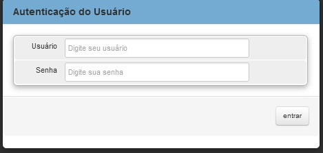
Consultar Formulários de Violência Doméstica

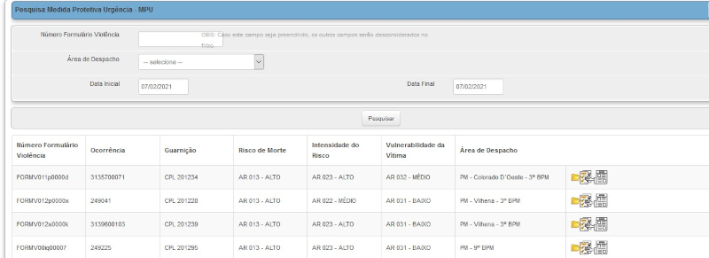
Ícones de Pesquisa
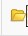 Abre informações da Ocorrência;Abre Formulário Violência;
Abre Relatório Formulário Violência.
Lançamento na Planilha SISEG
Manter aberto o sistema durante o serviço e ir atualizando para encontrar ocorrências, conforme são registradas pelos Guarnições dos Batalhões da Capital 1ºBPM e sua área de atuação, 5ºBPM e sua área de atuação e 9ºBPM e sua área de atuação.Lançar na Planilha Registro de Ocorrências - SISEG do Drive:
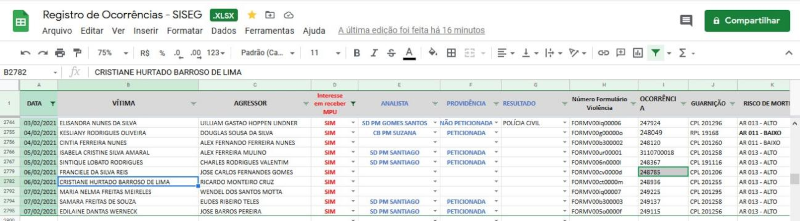
Selecionar esta linha do Sistema SISEG e copiar 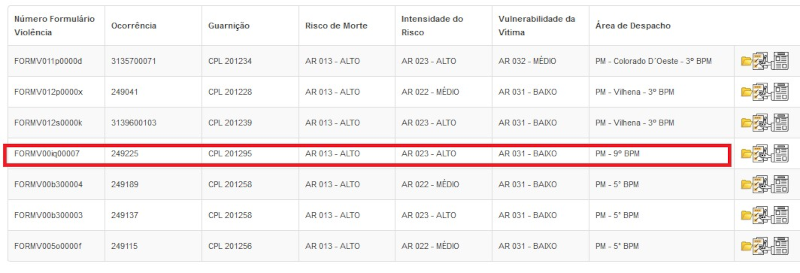
Colar na Planilha Registro de Ocorrências - SISEG a partir da linha destacada abaixo 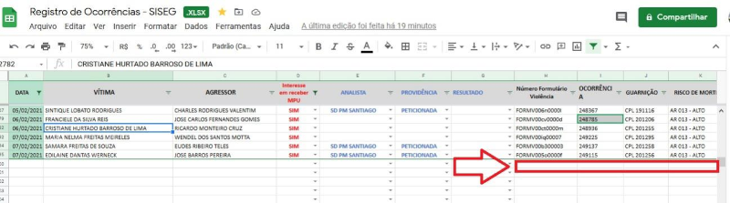
Abrir Relatório Formulário Violência
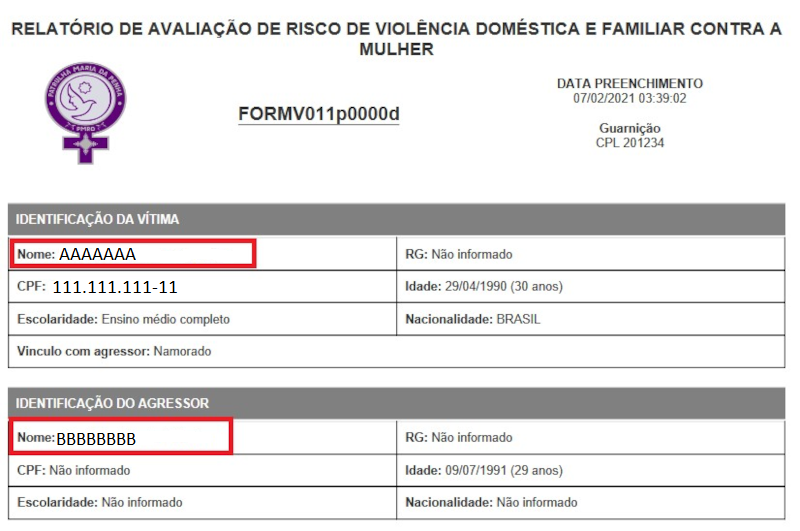
Selecionar o nome da Vítima e do Agressor colar na Planilha
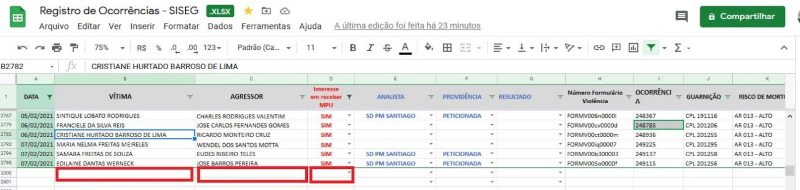
Na Planilha Selecionar a opção de interesse em MPU – SIM / NÃO conforme resposta no formulário de Violência:
Selecionar a opções de flagrante para o Agressor
/ Conduzido / Não Presente / Não conduzido
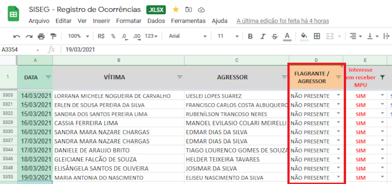
Em seguida na planilha acrescentar as informações ANALISTA – PROVIDÊNCIA, que após o peticionamento junto ao PJE deve ser preenchido o RESULTADO da PROVIDÊNCIA usando uma das opções conforme destaque abaixo:
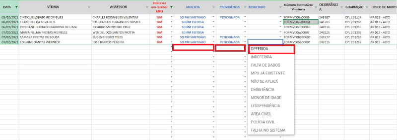
Se selecionada a opção FALTA DE DADOS a mesma deve ser mais detalhada no campo de observação ao final da linha, bem como o DEFERIDA deve ser informado o número do processo judicial.
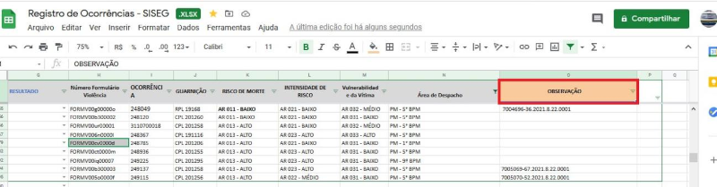